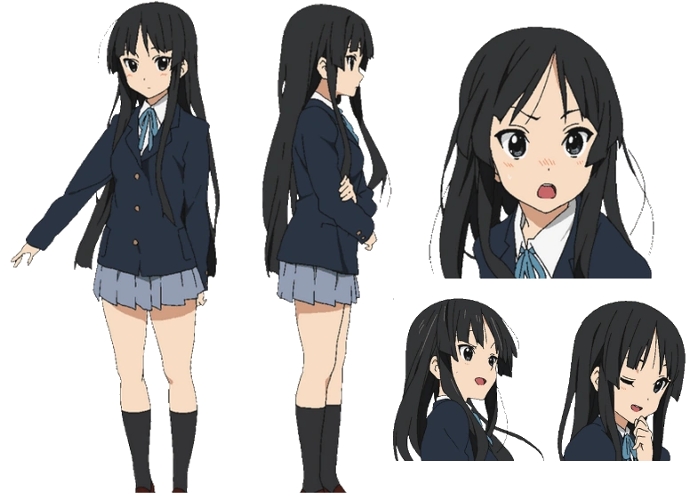

| Akiyama Mio (秋山澪) dari K-ON! | |
|---|---|
|
Mio Akiyama adalah pemain bass yang bersikap dewasa tapi penakut, sekaligus vokalis kedua Hōkago Tea Time. |
|
|
Penampilan : Mio mempunyai rambut hitam lurus, dan mata abu-abu, dengan tinggi 160 cm, yang menjadikannya tertinggi di grup. Seperti ditunjukkan dalam episode 4 season 1, dia juga sedikit lebih berdada besar dari yang lain (kecuali Mugi), membuat Yui dan Ritsu yang kesal, dan kemudian Azusa juga. |
|
Pengisi Suara:
|
|
| Foto | |
|  | |